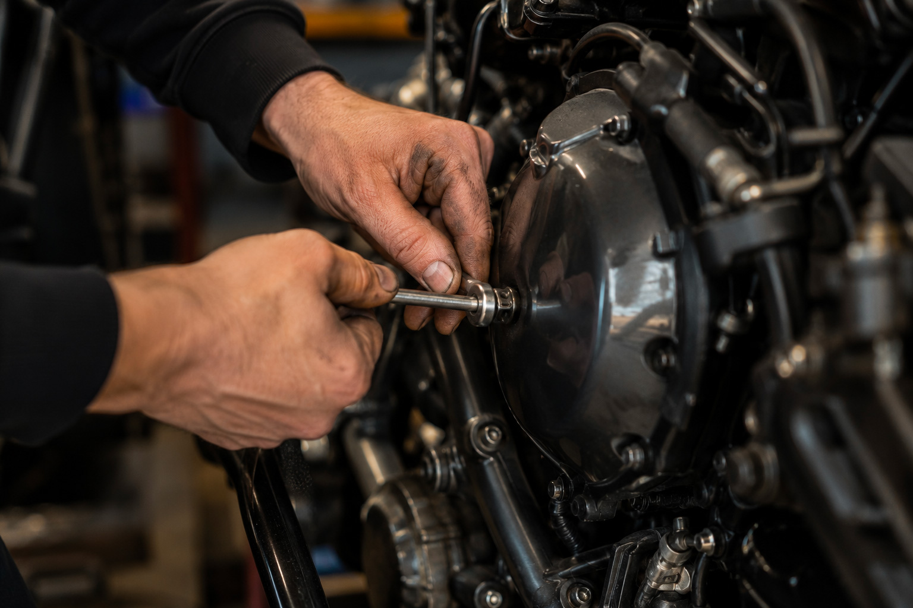

Intro
Steeds meer motorrijders doen hun onderhoud zelf. Olie verversen, de ketting smeren, remblokken vervangen, bougies wisselen, een luchtfilter monteren of remvloeistof verversen: voor veel eigenaren hoort het gewoon bij motorbezit. Zelf sleutelen bespaart geld, geeft meer controle over de kwaliteit van het werk en is voor veel liefhebbers ook gewoon een leuk onderdeel van de hobby.
Toch ontstaat er vaak een praktisch probleem. Het onderhoud is wel gedaan, maar het bewijs ligt verspreid over losse bonnetjes, screenshots van bestellingen, notities in een telefoon of foto’s ergens in een galerij. Daardoor raakt het overzicht snel kwijt. Voor veel rijders is een onderhoudsboekje motor daarom de logischste manier om al dat bewijs weer bij elkaar te brengen.

Artikel
Waarom steeds meer motorrijders zelf hun motor onderhouden
Zelf motor onderhouden is allang niet meer alleen iets voor ervaren sleutelaren met een complete werkplaats. Voor veel motorrijders begint het met eenvoudige klussen die prima thuis uit te voeren zijn. Dat heeft meerdere redenen.
Kosten spelen vaak als eerste mee. Arbeidstarieven lopen op, terwijl een oliewissel, filterwissel of kettingservice met het juiste gereedschap prima zelf te doen is. Daarnaast willen veel eigenaren meer controle over wat er precies gebeurt en welke onderdelen of vloeistoffen worden gebruikt.
Ook kennis is veel toegankelijker geworden. Via YouTube, forums en digitale werkplaatshandboeken kun je voor veel modellen stap voor stap zien hoe onderhoud wordt uitgevoerd. Zeker bij oudere motoren, youngtimers en klassiekers sleutelen eigenaren daardoor vaker zelf. Voor sommigen is het pure noodzaak, voor anderen juist een hobby die de band met de motor versterkt.
Het probleem: onderhoud zonder administratie verdwijnt uit beeld
Zolang alles vers in je hoofd zit, lijkt losse administratie nog werkbaar. Maar na verloop van tijd komen de bekende vragen vanzelf terug: wanneer heb ik de olie ook alweer vervangen, welke remblokken heb ik de vorige keer gemonteerd en bij welke kilometerstand was dat precies?
Veel informatie raakt versnipperd. Een bonnetje ligt nog in een la, onderdelen zijn besteld via meerdere webshops, foto’s staan ergens in WhatsApp of in een telefoonmap en een Excel-lijstje is na drie onderhoudsmomenten niet meer bijgewerkt. Daardoor ontbreekt al snel een duidelijke onderhoudshistorie van je motor.
Dat merk je niet alleen tijdens het rijden en plannen, maar vooral wanneer je wilt terugzoeken of verkopen. Zonder compleet overzicht ziet goed uitgevoerd onderhoud er van buitenaf al snel uit als een verzameling losse claims in plaats van een aantoonbare historie.
Waarom bewijs van zelf uitgevoerd onderhoud belangrijk is
Zelf onderhoud is niet minder waardevol dan onderhoud door een garage, maar alleen als je kunt laten zien wat er is gedaan, wanneer dat gebeurde, bij welke kilometerstand en met welke onderdelen. Precies daar zit het verschil tussen “ik heb het bijgehouden” en “hier is de onderhoudshistorie”.
Duidelijke vastlegging helpt op meerdere fronten. Bij verkoop geeft het vertrouwen en ondersteunt het je vraagprijs. Tijdens eigendom helpt het om onderhoudsintervallen beter te bewaken en dubbel of vergeten werk te voorkomen. En bij klassiekers, youngtimers en liefhebbersmotoren is zo’n overzicht extra prettig, omdat de historie vaak verspreid is over meerdere eigenaren en jaren.
Ook voor taxatie of verzekering kan een nette administratie praktisch zijn, omdat je sneller kunt laten zien welke onderdelen, revisies of verbeteringen zijn uitgevoerd. Zonder daar harde juridische claims aan te hangen, is het simpelweg beter om documentatie paraat te hebben dan achteraf te moeten reconstrueren wat er is gebeurd.
Wat moet je bewaren van je motoronderhoud?
Datum en kilometerstand
Deze combinatie vormt de basis van elke bruikbare onderhoudsregistratie. Alleen een datum zegt weinig als je veel of juist weinig rijdt. Alleen een kilometerstand mist context in de tijd. Samen laten ze zien wanneer een beurt plaatsvond en hoe lang geleden dat in gebruik was.
Uitgevoerde werkzaamheden
Noteer concreet wat je hebt gedaan. Denk aan olie en filters vervangen, remmen servicen, banden monteren, de ketting stellen of vervangen, bougies wisselen, koelvloeistof verversen of remvloeistof vernieuwen. Hoe duidelijker je omschrijving, hoe makkelijker je later terugvindt wat er precies is gebeurd.
Gebruikte onderdelen en vloeistoffen
Leg ook vast welke onderdelen of producten zijn gebruikt. Bijvoorbeeld het merk en type olie, een onderdeelnummer, bandenmaat, rembloktype of filterreferentie. Dat is handig bij herhaling, vergelijking en terugzoeken.
Facturen en aankoopbonnen
Ook losse onderdelenbonnen hebben bewijswaarde. Ze laten zien dat je onderdelen daadwerkelijk hebt gekocht en helpen om werkzaamheden te onderbouwen. Zeker wanneer je onderhoud motor zelf doet, zijn dit vaak de stukken die later het verschil maken tussen een vaag verhaal en een geloofwaardige registratie.
Foto’s van werkzaamheden
Foto’s geven extra context. Denk aan voor- en nafoto’s, beelden van vervangen onderdelen, revisies, restauratiewerk of grotere reparaties. Zeker bij oudere motoren of projectmotoren helpt visueel bewijs om de historie concreet te maken.
Opmerkingen en aandachtspunten
Kleine notities zijn vaak verrassend waardevol. Bijvoorbeeld “volgende keer ketting vervangen”, “kleppen gecontroleerd, nog binnen tolerantie” of “lichte lekkage in de gaten houden”. Zulke opmerkingen maken je administratie bruikbaarder dan een kale lijst met alleen onderdelen en bedragen.
Van papieren stempelboekje naar digitale onderhoudshistorie
Wie zijn onderhoudsboekje motor goed wil opbouwen, heeft vooral behoefte aan één centrale plek. Niet nog een los notitieblok, maar een systeem waarin onderhoud per voertuig samenkomt. Precies daar sluit GarageBook op aan.
Met GarageBook houd je onderhoud per voertuig bij in een visuele tijdlijn. Je koppelt kilometerstanden, kosten, documenten, foto’s en facturen aan elk onderhoudsmoment, zodat je stap voor stap een duidelijke onderhoudshistorie opbouwt. Dat werkt voor motoren, maar net zo goed voor auto’s en klassiekers.
Voor mensen die nu nog werken met Excel voor motoronderhoud of losse notities uitproberen in een motor onderhoud app, maakt zo’n centrale aanpak vooral het verschil in overzicht. Alles staat op één plek en blijft aan het juiste voertuig gekoppeld.
Houd je zelf uitgevoerde onderhoud netjes bij
Of je nu één motor hebt of een hele garage met projecten: met GarageBook bouw je stap voor stap een complete onderhoudshistorie op.
Zelf sleutelen wordt waardevoller als je het goed vastlegt
Onderhoud krijgt pas echt waarde wanneer je het later kunt terugvinden en laten zien. Niet alleen voor een mogelijke koper, maar ook voor jezelf wanneer je plant, terugzoekt of onderdelen opnieuw bestelt. Wie zelf sleutelt en tegelijk goed documenteert, bouwt aan een motorhistorie die compleet, praktisch en geloofwaardig blijft.
Meer lezen over onderhoud en historie
Wil je dit onderwerp verder uitdiepen, lees dan ook hoe je structureel motor onderhoud bijhoudt, hoe een digitaal onderhoudsboekje voor voertuigen werkt, hoe een onderhoudsboekje motor werkt, wanneer motor onderhoud in Excel begint te knellen en waarom steeds meer rijders kiezen voor een praktische motor onderhoud app.
Veelgestelde vragen over zelf motoronderhoud bijhouden
Is zelf onderhoud doen slecht voor de verkoopwaarde van een motor?
Nee, niet automatisch. Het wordt vooral een probleem als je niet kunt laten zien wat er is gedaan. Met duidelijke documentatie, facturen, foto’s en kilometerstanden kun je zelf uitgevoerd onderhoud beter onderbouwen.
Hoe bewijs je zelf uitgevoerd motoronderhoud?
Door datum, kilometerstand, werkzaamheden, gebruikte onderdelen, facturen en foto’s vast te leggen. Zo ontstaat een onderhoudshistorie die later terug te vinden en te delen is.
Welke gegevens moet ik bewaren van motoronderhoud?
Bewaar minimaal datum, kilometerstand, omschrijving van het onderhoud, onderdelen, kosten en eventuele facturen of foto’s.
Kan ik onderhoud van meerdere voertuigen bijhouden?
Ja, GarageBook is bedoeld om onderhoud per voertuig vast te leggen. Dat kan voor motoren, auto’s, klassiekers en andere voertuigen.
Is een digitaal onderhoudsboekje handig voor oudere motoren?
Juist bij oudere motoren is het handig, omdat papieren boekjes vaak ontbreken en de historie verspreid is over losse documenten, herinneringen en oude facturen.
Start met je onderhoud op één plek
Begin vandaag met het vastleggen van onderhoud, onderdelen, kilometerstanden, foto’s en documenten van je motor.